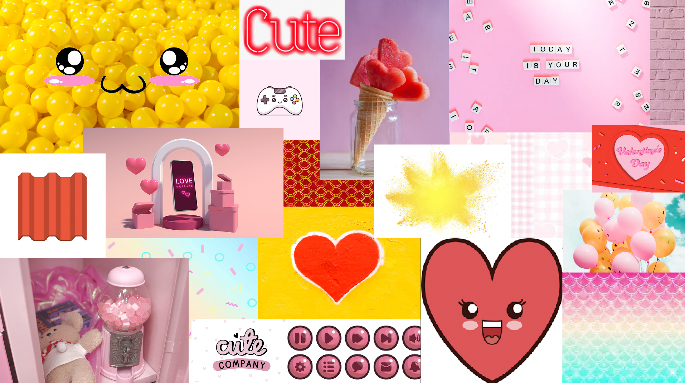
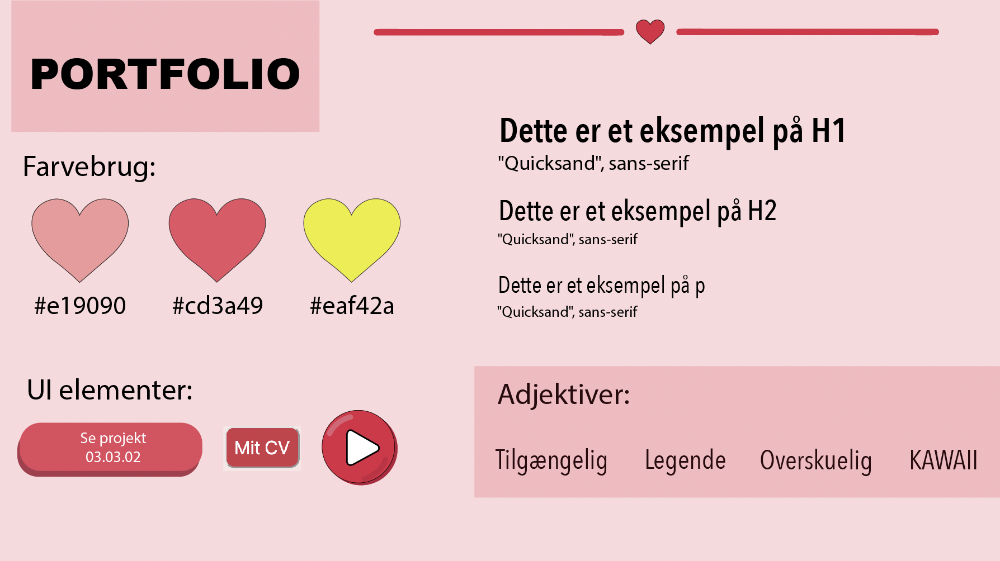
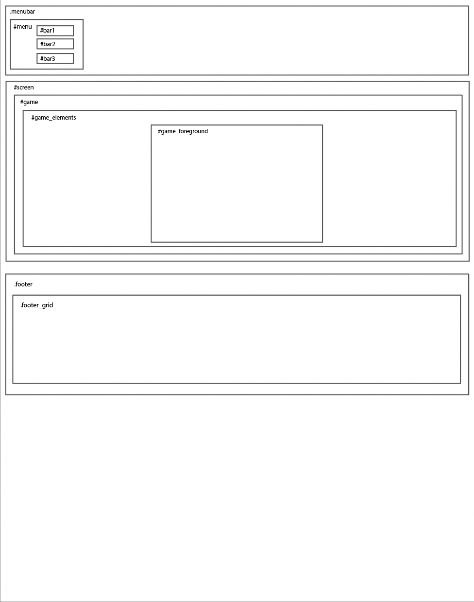
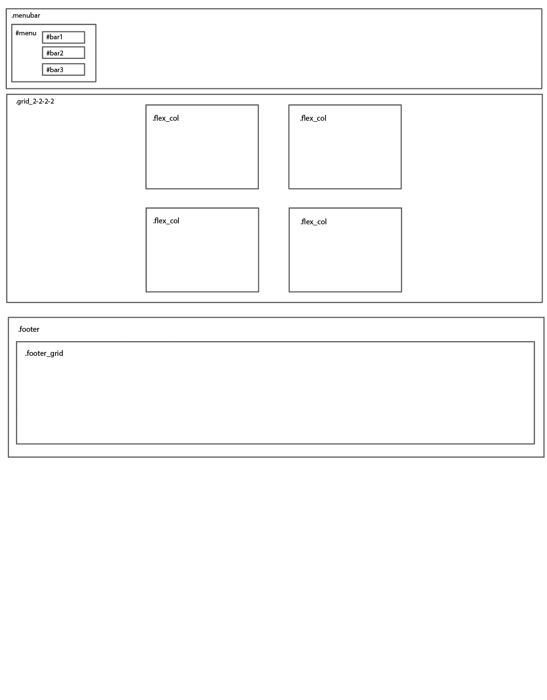
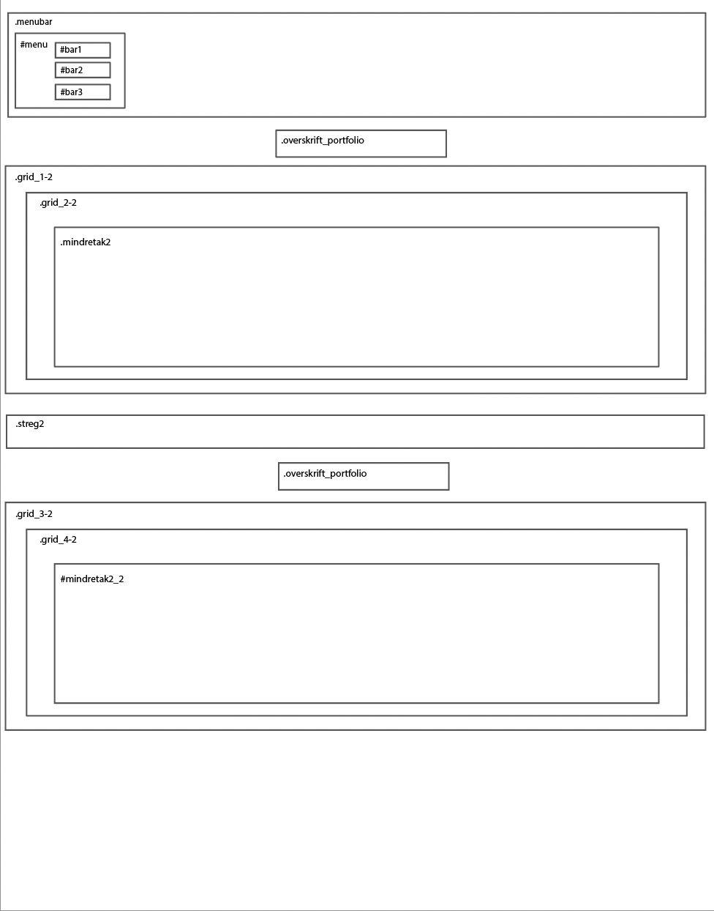
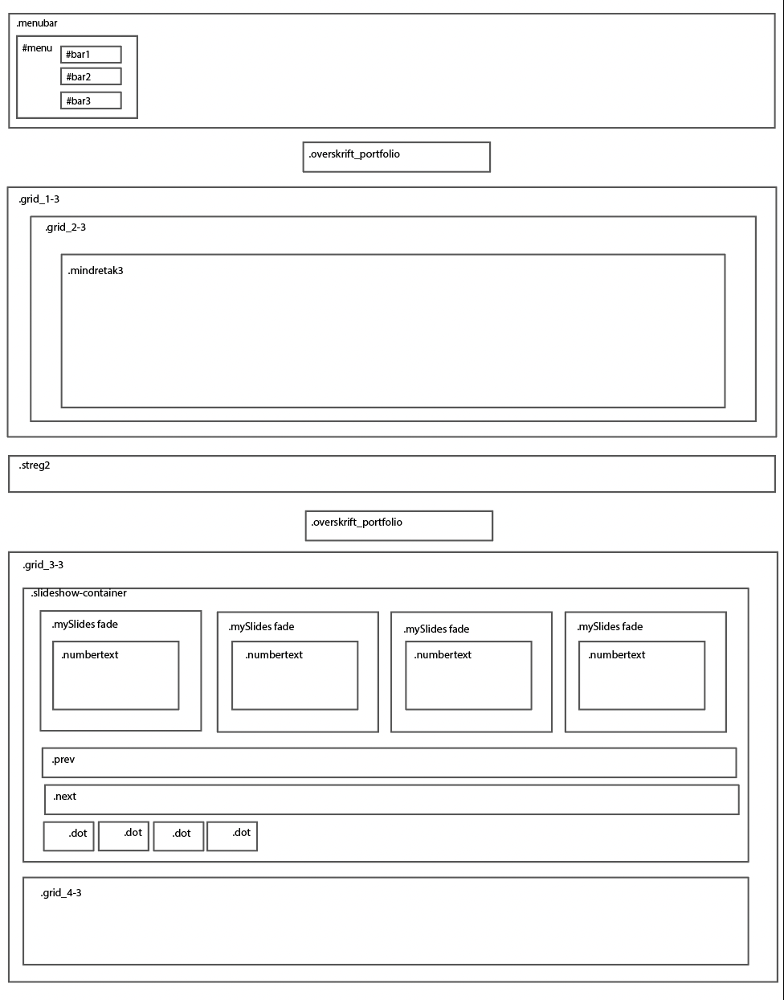
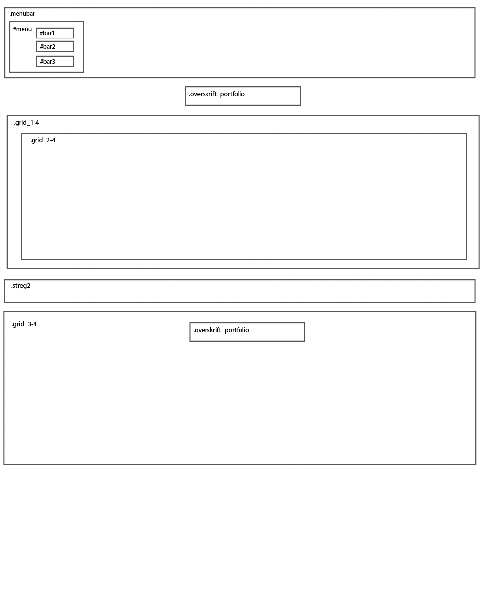
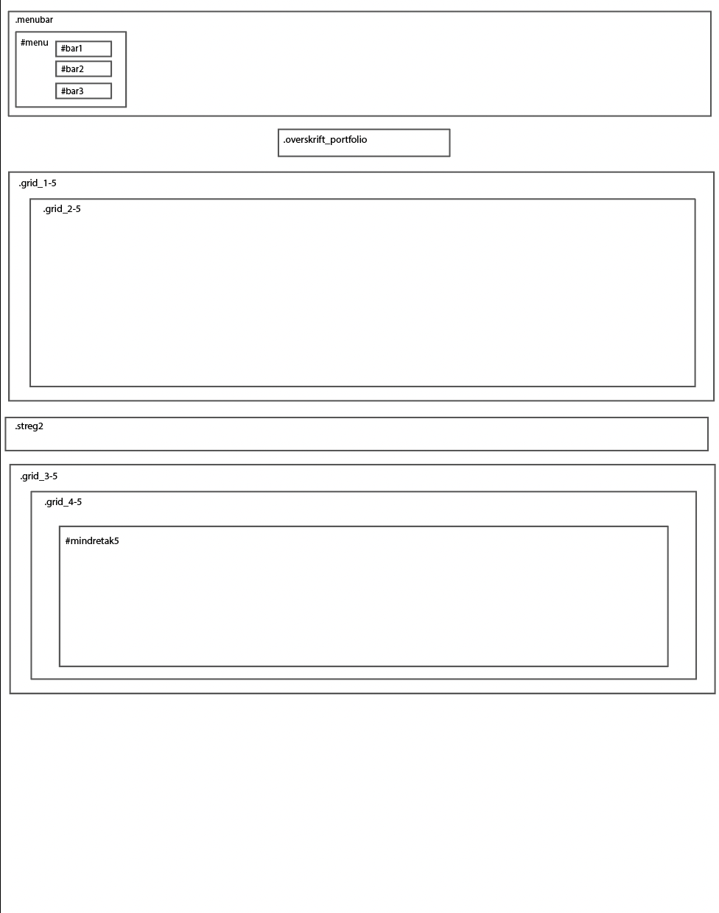
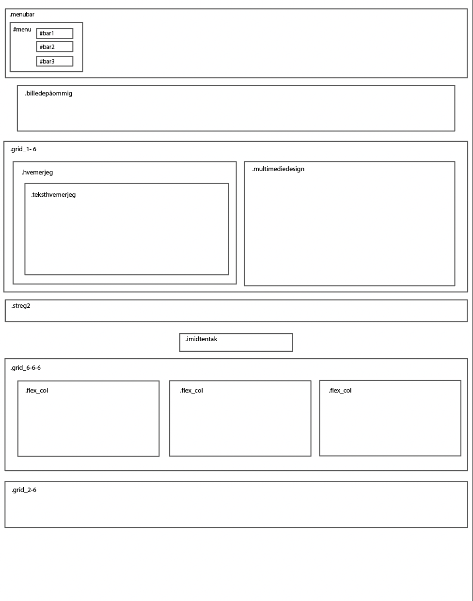
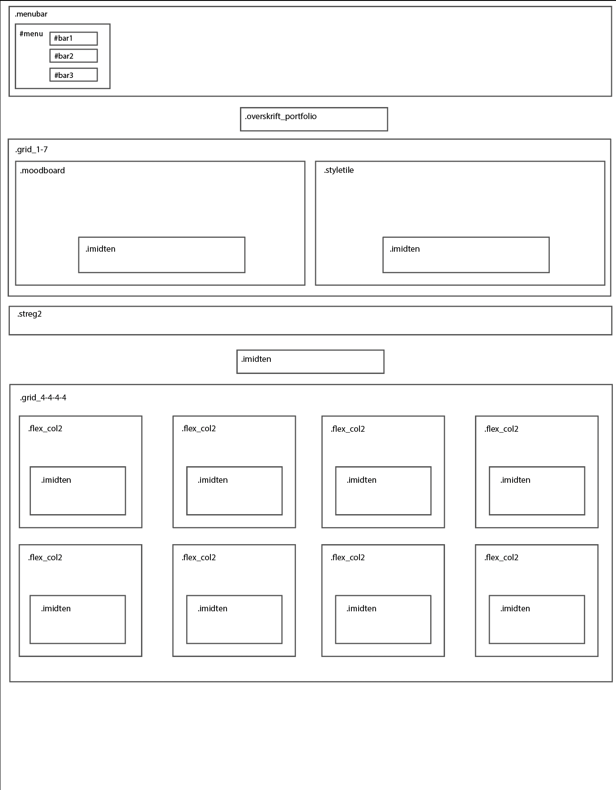

Min proces
Her får i et lille indblik i min proces og noget af det der lægger bag mit portfolio site.

Moodboard
Mit moodboard udtrykker det univers jeg gik efter på mit portfolio site. Der kan både findes diverse teksture, farver og forme.

Styletile
Mit stiletyle viser et hurtigt overblik over den grafiske stil jeg har valgt til mit portfoliosite.
Som det ses, arbejder jeg hovedsageligt med 3 forskellige farver: Lyserød, rød og gul. Disse farver kan så optræde i forskellige neuancer da farverne er transparente.
Mine ikoner og knapper er primært holdt i 1 farve for at gøre dem enkle og klart kommunikerende.

Layoutdiagrammer

Index

Portfolio

Tema 2

Tema 3

Tema 4

Tema 5

Om mig
